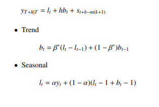
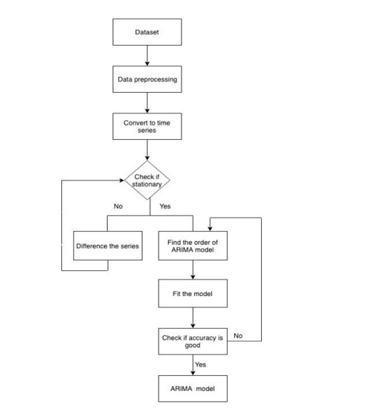

<!DOCTYPE html>
<html lang="en">
<head>
    <meta charset="UTF-8">
    <meta name="viewport" content="width=device-width, initial-scale=1.0">
    <link rel="stylesheet" href="styles.css">
    <title>PA assignment Blog</title>
    <link rel="preconnect" href="https://fonts.googleapis.com">
<link rel="preconnect" href="https://fonts.gstatic.com" crossorigin>
<link href="https://fonts.googleapis.com/css2?family=PT+Serif:ital@0;1&display=swap" rel="stylesheet">
</head>
<body>

    <header>
        <h1>Predictive Analytics-Assignment</h1>
        <p>Bharath Kesav's blog</p>
    </header>

    <nav>
        <ul>
            <li><a href="./cs2.html">Case_study_2</a></li>
            <li><a href="./cs3.html">Case_study_3</a></li>
            <li><a href="./cs4.html">Case_study_4</a></li>
        </ul>
    </nav>
<div>
    <section class="main-content">
    <h1 style="font-size:50px;">PREDICTIVE ANALYTICS IN AGRICULTURE : Forecasting prices of Arecanuts
    in Kerala</h1>
    
       
        <article>
            <h2>Introduction :</h2>
            <p>In this blog,
                the monthly prices of arecanut in Kerala are predicted using time-series and machine learning models.</p>
        </article>

    
        <article>
            <h2>Data Description :</h2>
            <p>Predictive Analytics of prices of Arecanuts consist of several datasets such as:</p>
            <ol>
                <li>Historical price data.</li>
                <li>Wheather data.</li>
                <li>Crop yield data.</li>
                <li>Market demand data.</li>
                <li>Pest and Diseases data.</li>
                <li>Government policies and interventions.</li>
                <li>satellite imagary for density of the crops.</li>
                <li>Social and cultural factors.</li>

               
            </ol>
        </article>
       
        <article>
            <h2>Techniques Used : </h2>
            <p>The performance of classical time-series modelsHolt-Winter’s Seasonal Method, SARIMA model- and Machine learning model- LSTM were compared for finding out
                the most parsimonious model. Exploratory analysis indicated the presence of trend and seasonality in the time-series
                data of prices. ARIMA and Holt-Winter’s seasonal method is the commonly used statistical method in forecasting
                data with trend and seasonality. These models are capable of producing forecasts with relatively good performance.
                LSTM model was selected as it has the ability to capture the non-linear dependence of the data points that makes it
                favourable for time-series forecasting</p>
                <ul>
                    <li>ARIMA (Auto-Regressive Integrated Moving Average) model is a variation of Box Jenkins models used for predicting or understanding stationary or non-stationary time-series data. The Box Jenkins model plays a vital role in the
                        area of time-series analysis and forecasting.</li>
                        <br>
                        <li>Holt-Winter Seasonal Method is one of the variation of Exponential Smoothing used for seasonal data. It consists
                            of a forecast equation(Eq.2) and three smoothing equations:</li>
                            <br>
                            <li>Deep learning model-LSTM was the machine learning model used for forecasting.</li>
                </ul>
                

        </article>
        <article>
            <h2>Architecture :</h2>
            
        </article>
       
        <article>
            <h2>Data Preprocessing :</h2>
            <p>The dataset contained missing values for most of the districts. For districts having missing values less than 50%, the
                linear interpolation method was used. Wayanad district had the most number of missing values, which resulted in data
                inconsistency. These missing values were filled using the multiple linear regression method. The predictor variables
                were selected using the correlogram, a plot that consists of correlation between the predictor and forecast variable.
                Districts having a correlation greater than or equal to 0.7 were selected as the predictor variable. The dataset was
                simplified by taking the average of district-wise monthly data. The price of arecanuts is per 100 numbers. Forecasting
                was done using ARIMA and Holt-Winter Seasonal method, and their performances were compared</p>
            
               
            
        </article>
        <article>
            <h2>Conclusion :</h2>
            <p> Based on this work the judgements can me made with support for a better economic outcome. As Kerala is second in terms of production of arecanuts, the work will help
                the arecanut producers in managing their resources for better production of crops with maximum profit based on
                the forecast of prices. Based on a number of previous works, statistical methods were dominating in predicting the
                variation of prices. But in this work, LSTM was found to be a better model in forecasting the prices of arecanuts in
                Kerala. The one drawback will be the lack of data available for training as LSTM is a deep learning algorithm that
                requires a lot of data</p>
        </article>
        <article>
            <h2>Result :</h2>
            <p>Time series forecasting plays a vital role in the agricultural markets.</p>
           
        </article>
    </section>
    
    <article>
        <h2>References :</h2>
        
        <p>Chat gpt, Quora, sciencedirect.com . </p>
    </article>

    <aside>
        <h2>About Me</h2>
        <p>Name:Bharath Kesav M</p>
        <p>Reg no: 917722S004</p>
    </aside>

    </div>

  


</body>
</html>
